Стратегические проекты
Приоритет‑2030
Программа развития КФУ до 2036 года: «Биотехнологии Крыма», «Цифровая платформа университета», «Здоровье человека».
К программе развития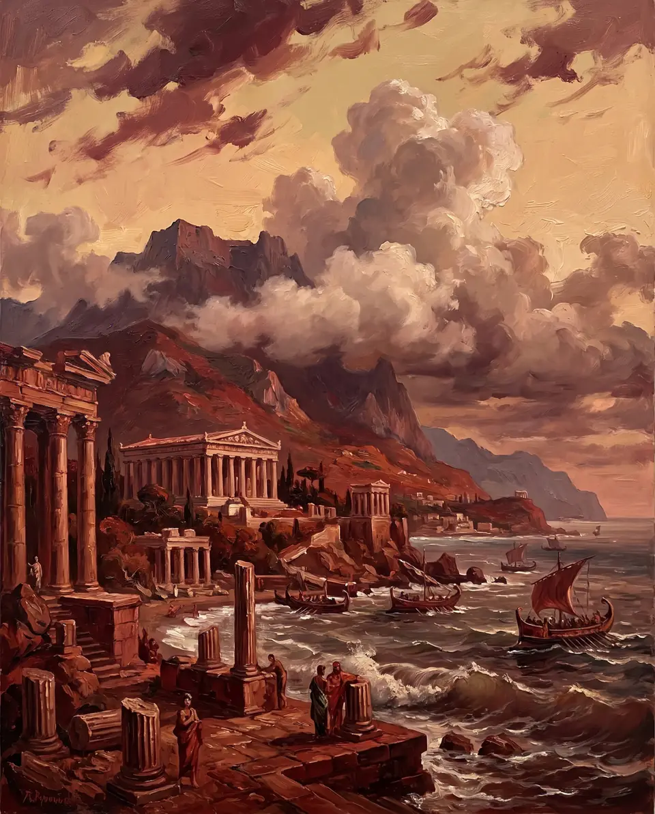
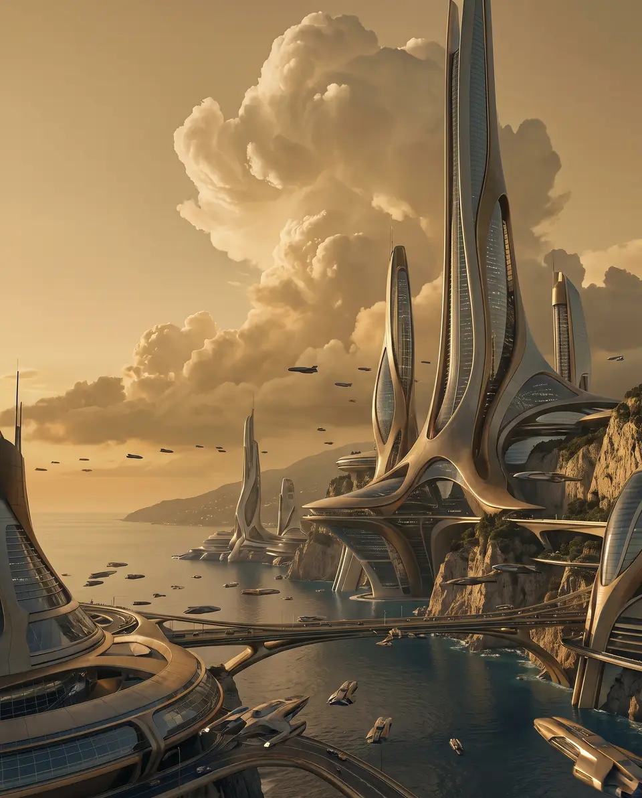
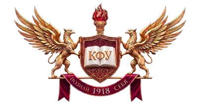
Прошлое, проверенное столетием, — будущее, написанное сегодня
Крымский федеральный университет имени В. И. Вернадского — старейший и крупнейший вуз Республики Крым. Объединяет 11 институтов и 9 филиалов, реализует 460 образовательных программ, из них 384 — программы высшего образования. Основан в 1918 году.
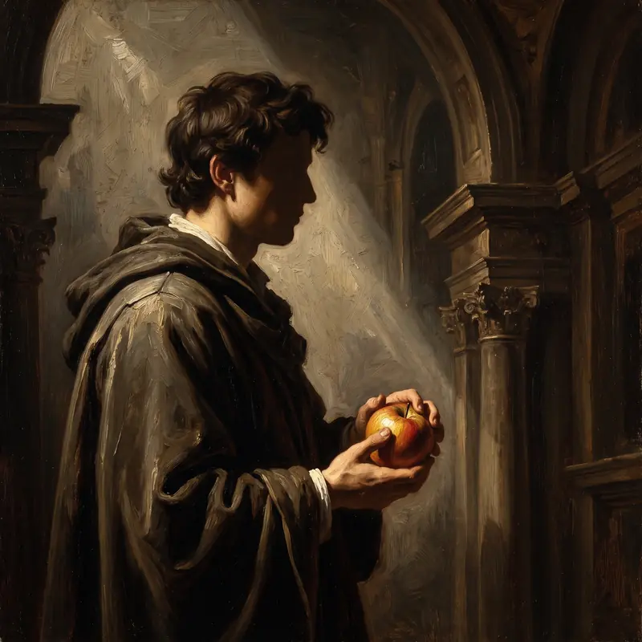
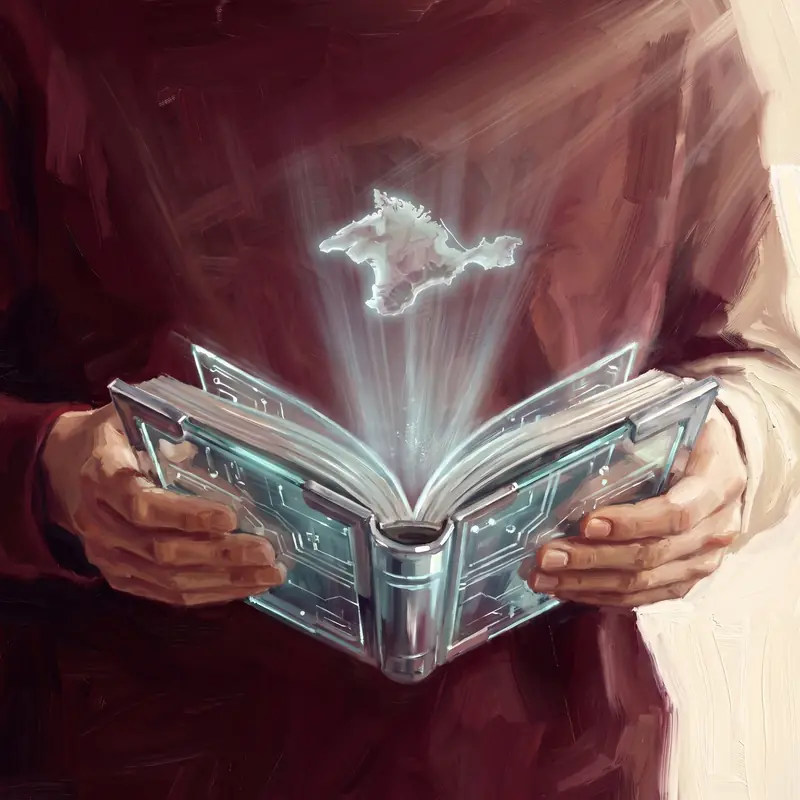
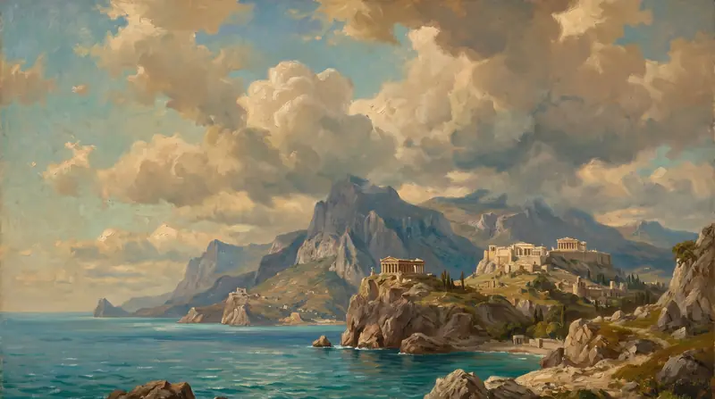
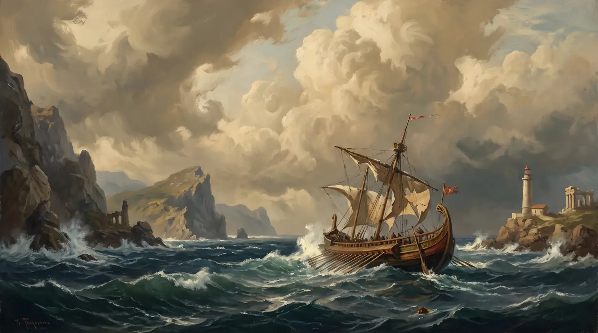
КФУ — это 11 институтов и академий, расположенные в Симферополе, Ялте, Севастополе, Евпатории и пгт Советский. Ведущие направления: фундаментальные и прикладные исследования в области физики, биологии, медицины, виноградарства и виноделия, морских наук, IT. Университет — участник программы «Приоритет‑2030» с программой развития до 2036 года, ведёт совместные проекты с ведущими российскими и зарубежными научно-исследовательскими центрами.
Программа развития КФУ до 2036 года: «Биотехнологии Крыма», «Цифровая платформа университета», «Здоровье человека».
К программе развития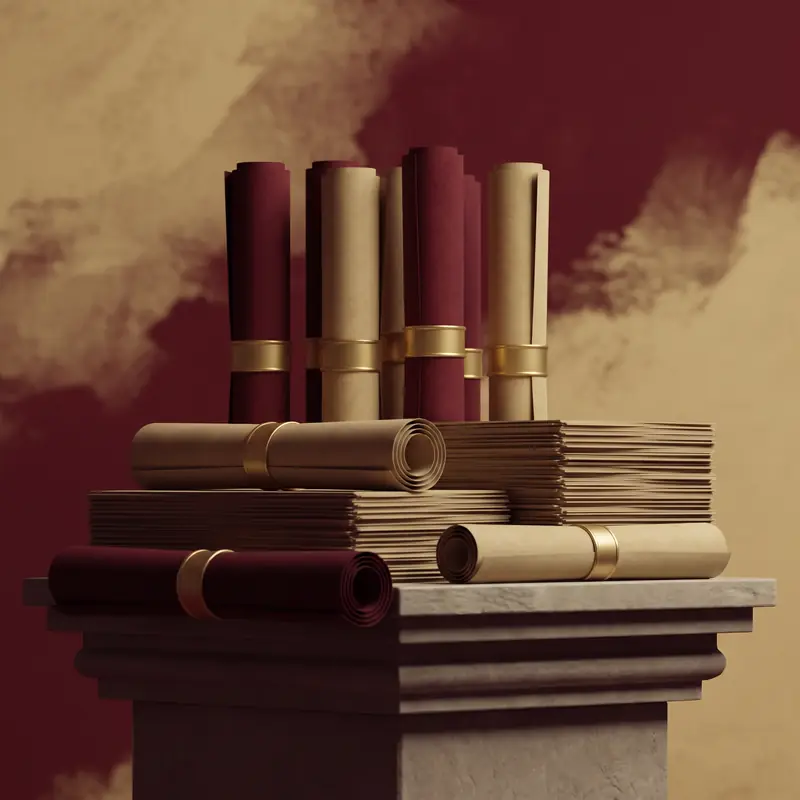
Действует до 2030 г. Все программы обучения соответствуют ФГОС.
Документы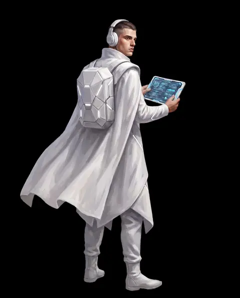
Педагогика · приём заявок
Наука · презентация книги
IT · олимпиада
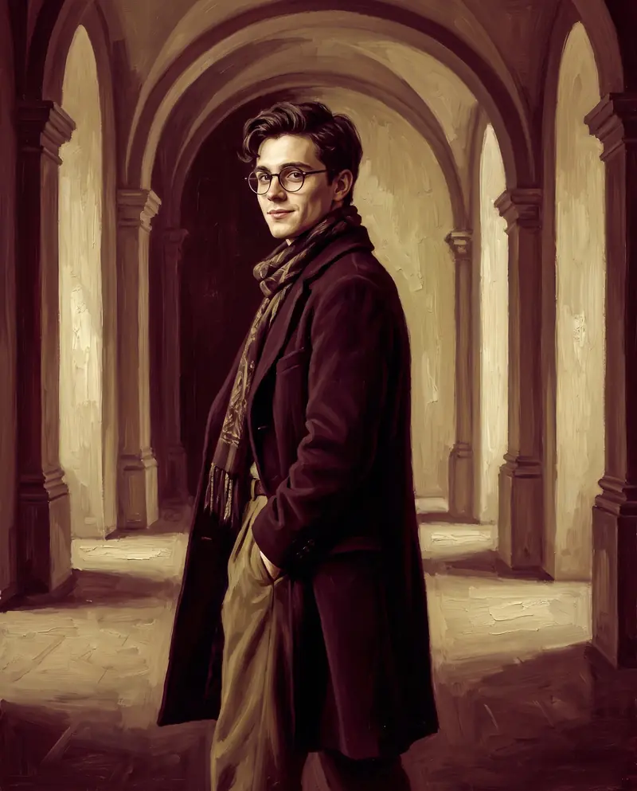
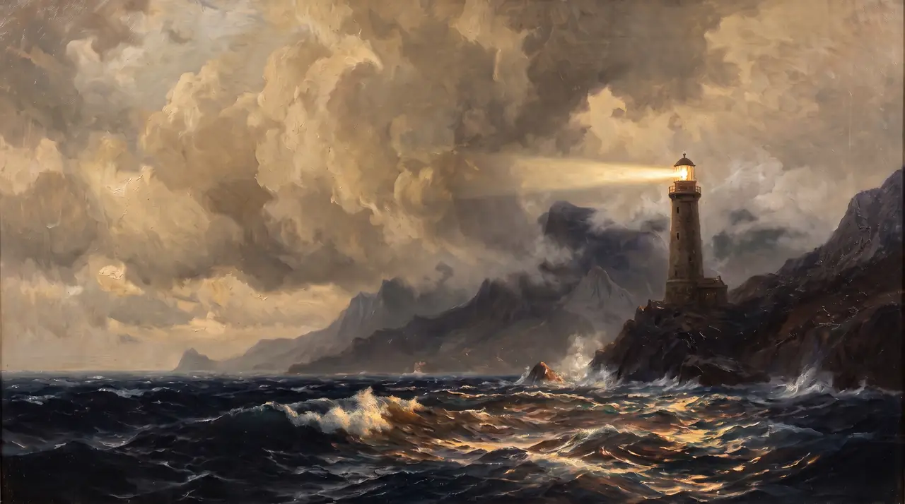
В 2026 году КФУ выделил 3 778 бюджетных мест в бакалавриате и специалитете и 1 749 — в магистратуре. Бакалавриат, специалитет, магистратура, аспирантура, ординатура и среднее профессиональное образование — выберите свою траекторию.
Даты по правилам приёма 2026 года. Календарь кампании‑2027 появится вместе с новыми правилами приёма.
Старт приёма документов
Окончание приёма для сдающих вступительные испытания КФУ
Окончание приёма документов по результатам ЕГЭ
Согласие на зачисление — первый этап
до старта приёма документов в 2027 году
Согласие на зачисление — основной этап
Приказ о зачислении на бюджетные места
Приказ о зачислении на места по договорам
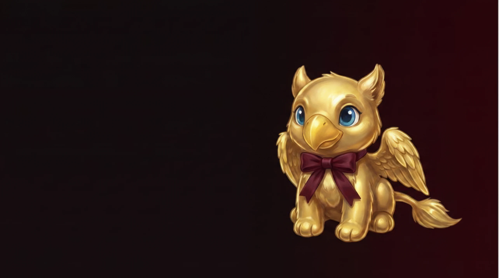
Золотой грифончик, вылупившийся в туманах Ай‑Петри в год основания университета — в 1918‑м. Днём он дремлет под сводами старой библиотеки, а по ночам расправляет крылья над полуостровом.
Сегодня Таврик встречает каждого, кто заходит на сайт КФУ, — совсем как встречал бы гостя у дверей старого корпуса. Наведи курсорКоснись его — и он посмотрит в ответ.